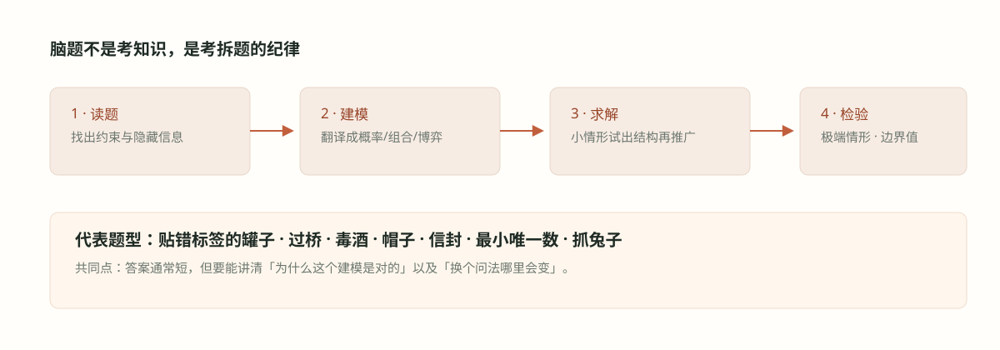

#013. 经典脑题 III：毒酒、四和、帽子与信封

#学习目标：信息怎么被编码、被传递、被误用
本章四道题排成一条「信息主线」。毒酒题问：一次实验最多能产出多少信息？答案是每人一比特，于是 100 种可能性最少需要 7 个人——这是信息论下界在面试里最朴素的样子。四和题问：无序的观测能不能反解出有序的未知数？答案是能，但要先利用排序结构识别出哪些观测是哪个未知数的组合，再用线性方程组恢复。帽子题问：「我不知道」这句话本身携带多少信息？答案是：当所有人都理性时，一句「不知道」能排除一整族可能世界，这正是公共知识（common knowledge）的力量。两信封题问：一段看起来无懈可击的期望计算为什么会导出荒谬结论？答案是它偷偷把「同一个数」用在了两个互斥的条件事件上——条件期望（conditional expectation）的适用边界必须搞清楚。
这四种能力在量化面试后续章节都会再出现：编码思想对应009 章位运算，反解未知数对应026 章回归，公共知识对应024 章博弈论，条件期望的正确姿势对应020 章与028 章。本章各取其最小版本。
n 个二元输出的观测者最多区分 \(2^{n}\) 种假设；想让区分能力最大，就要让每种假设对应一个唯一的输出组合——二进制编码。
无序观测先经排序结构「认亲」（最小和是 a+b、最大和是 c+d），再解线性方程组，最后用整数性、正性筛掉假解。
对观测值 \(v\) 做条件期望时，两种互斥情形的权重是后验概率，不是想当然的各一半。
#知识点一：一次观测值多少比特
信息论的基本账本：一个只有「生/死」「是/否」两种结局的观测者，一次实验最多产出 1 比特信息。\(n\) 个这样的观测者一共能区分的世界数不超过：
怎么读：\(n\) 个人的生死状态是一个 \(n\) 位 0-1 向量，总共 \(2^{n}\) 种；若要在这 \(2^{n}\) 种状态与「哪瓶酒有毒」之间建立一一对应，假设总数不能超过 \(2^{n}\)。反过来，只要假设数不超过 \(2^{n}\)，总可以用二进制编码构造出一一对应——给每个假设写一个 \(n\) 位二进制编号，第 \(i\) 位观测者检验「编号的第 \(i\) 位是否为 1」。于是「最少几个人」这类问题的答案永远是：
怎么读：人数是对「假设数的以 2 为底对数」向上取整。毒酒题里 \(\log_{2} 100 \approx 6.64\)，向上取整得 7。这个「下界 + 构造」的两段式论证结构（先证少于 7 人不够，再给出 7 人的具体方案）适用于几乎所有编码类脑题，包括天平称球、一次提问猜数等变式。
下界来自输出向量的计数：7 人只有 \(2^{7} = 128\) 种生死组合，6 人只有 64 种，装不下 100 瓶酒；构造来自二进制：每个 0-99 的数有唯一的 7 位二进制表示，把「酒号」映射到「死哪些人」，信息一分不损。上下界咬合，答案就是刚好的 7。
#知识点二：公共知识与条件期望的两把刀
第一把刀：把「不知道」当数据。帽子题里每个人能看见别人、看不见自己，唯一的交流是依次宣布「知不知道」。理性人说出「我不知道」，等于宣告：**与我所见一致的所有可能世界里，我的颜色不唯一**。听者拿到这句话，就能排除「若你是某颜色你就会知道」的那些世界。推理链每多一环，可能世界就瘦一圈。这类推理的严格名字是公共知识推理——「我知道你知道我不知道」逐层展开。024 章的博弈均衡分析用的也是同一层逻辑：策略推理的本质是对「别人怎么想」建模。
第二把刀：条件期望必须带上权重。设你打开信封看到金额 \(v\)，另一封是 \(2v\) 还是 \(v/2\) 并非对半开，而由信封金额的先验分布决定。正确的条件期望是：
怎么读：\(q(v)\) 是看到 \(v\) 之后你拿小信封的后验概率，它随 \(v\) 变化——大额更可能是「大信封」。荒谬的「换总多赚 25%」结论正是把 \(q(v)\) 恒等于 \(1/2\) 带进去造成的：那个隐含假设要求金额先验在正半轴上均匀，而这样的概率分布不存在（不可数正数上没有均匀概率）。两把刀合起来提醒我们：概率推理中，「观察到什么」和「据此更新什么」必须严丝合缝，任何一步想当然都会产出悖论。
只要一个论证推出「无条件占优的策略」（换永远好、停永远好），就应该立刻怀疑：它多半在不同分支上用了不一致的概率假设。合法的无条件结论只能来自对称性（两信封互换不改变联合分布），而对称性给出的答案永远是「换与不换期望相同」。
#例题详解一：100 瓶毒酒与 7 位品酒师
例题 1：100 瓶酒中恰有一瓶有毒，毒发时间为一天。明晚有宴会，你需要在那之前确定毒酒。可以雇若干品酒师，每人可以试多瓶酒（混着喝没有问题，毒量足够）。最少雇多少人？
建模。一天的时间限制意味着只有一轮实验：所有品酒师今晚同时喝，明天看生死。每个人是一比特信道：活/死。要把「100 种毒酒假设」装进「\(n\) 人的生死组合」里，用知识点一的下界加构造框架。
推导。下界：\(n\) 个人的生死状态至多 \(2^{n}\) 种，要区分 100 瓶，需 \(2^{n} \ge 100\)。\(2^{6} = 64 \lt 100 \le 128 = 2^{7}\)，故 \(n \ge 7\)。构造：把瓶子编号为 0 到 99，写成 7 位二进制 \(b_{6}b_{5}\dots b_{0}\)。第 \(i\) 位品酒师喝下所有第 \(i\) 位为 1 的酒（每人约喝 50 瓶的混合样）。次日，把 7 个人的状态排成一个 7 位向量：死了记 1、活着记 0——这个向量的二进制值恰好就是毒酒的编号。例如只有第 0 位和第 6 位品酒师死了，则毒酒编号是 \(1000001_{2} = 65\) 号。若无人死亡，编号是 0（全零向量），对应 0 号瓶——所以编号必须从 0 开始，恰好把 \(2^{7} = 128\) 个输出组合中的前 100 个用满。
检验。逐一核对：不同毒酒的二进制编号不同，死者的集合必不同，因此方案无歧义；每人一比特，7 比特 \(\ge \log_{2} 100 \approx 6.64\) 比特，信息量刚好够。边界情形：全活对应 0 号酒，全死对应 127 号——127 号不在 0 到 99 范围内，所以「全死」不会出现，输出集合与假设集合一一对应。时间约束也满足：只需一个昼夜。
面试怎么讲。先报答案「7 人」，再给两段论证：「64 种生死组合装不下 100 瓶，所以 6 人不够；7 人够，因为把瓶号写成 7 位二进制、让第 \(i\) 人喝所有第 \(i\) 位是 1 的酒，死者集合的二进制就是毒酒编号。」主动延伸：若毒发时间改成两小时、你有两天，则 2 人就够（分两轮各 1 比特，\(2 \times 1\) 比特配 4 瓶……对 100 瓶需要 \(\lceil \log_2 100\rceil\) 比特仍要 7 人-轮）——多轮实验把「人数×轮数」当比特数用，这是编码类题的通用推广。
#例题详解二：四个正整数与五个两两和
例题 2：有四个正整数 \(a, b, c, d\)，把 \(a \le b \le c \le d\) 排好。六个两两和 \(a+b, a+c, a+d, b+c, b+d, c+d\) 中给你五个（不告诉你哪个和对应哪一对）。如何确定 \(a,b,c,d\)？用给出的五个和 \(\{3, 5, 6, 10, 12\}\) 演示。
建模。关键结构：把六个和从小到大排，最小的一定是 \(a+b\)（两个最小的数相加），最大的一定是 \(c+d\)（两个最大的相加），次小的一定是 \(a+c\)，次大的一定是 \(b+d\)。把给的五个和排序为 \(w_{1} \le w_{2} \le w_{3} \le w_{4} \le w_{5}\)，则四个身份可以直接认领：
身份不明的只剩 \(w_{3}\)：它只能是 \(a+d\) 或 \(b+c\) 之一。于是分两种情形解线性方程组，用「正整数、且满足 \(a \le b \le c \le d\）、且剩余等式吻合」做筛选。
推导。代入 \(\{3,5,6,10,12\}\)：\(a+b=3,\ a+c=5,\ b+d=10,\ c+d=12\)，\(w_{3}=6\) 待定。情形一（\(w_{3}=a+d\)）：由 \(a+c=5\)、\(a+d=6\)、\(c+d=12\)，前两式相加减第三式得：
不是正整数，情形一淘汰。情形二（\(w_{3}=b+c\)）：由 \(a+b=3,\ a+c=5,\ b+c=6\) 的三式联立（克拉默法则或加减消元）：
核对 \(b+d = 2+8 = 10 = w_{4}\) 吻合。答案 \(a,b,c,d = 1,2,4,8\)，缺的那个和是 \(a+d = 9\)。
检验。把 \(1,2,4,8\) 的六个两两和全算出来：\(3,5,9,6,10,12\)，去掉 9 正是给出的五个——闭环。筛选条件的完备性：情形一必须同时满足 \(a\) 为正整数与 \(b+d=w_{4}\)，本例在整数性上就被否决；一般地两个情形至多一个通过所有检查（在非退化条件下），若两个都通过则题目数据本身不唯一，面试时应主动指出这一可能性而非硬选一个。
面试怎么讲。「排序认四个身份：最小是 \(a+b\)、次小是 \(a+c\)、次大是 \(b+d\)、最大是 \(c+d\)；中间那个 \(w_{3}\) 只有 \(a+d\)、\(b+c\) 两种可能，各解一次线性方程组，用正整数性筛。」演示例子时报出 \(\{1,2,4,8\}\)。这个「结构识别 + 分情形反解 + 约束筛选」的三段式，同样适用于给中位数、给乘积等变式。
#例题详解三：三蓝两红帽子
例题 3：房间里有三蓝两红五顶帽子，三人在黑暗中各戴一顶（自己看不见自己的）。走到亮处后，第一人看了后两人说「我不知道自己什么颜色」；第二人听了之后看了第三人，说「我也不知道」；第三人是盲人，听完后说「我知道我的颜色」。第三人戴什么颜色的帽子？
建模。只有两顶红帽。第一人的视野是第二、三人的帽子；他能确定自己颜色的唯一情形是看见两顶红（红帽只有两顶，全在别人头上，自己必蓝）。他说「不知道」，这句话对全世界广播了一条信息：第二、三人不同时戴红。第二人接收这条信息后仍只能看第三人：若第三人戴红，则由「不同时红」，第二人立刻推出自己必蓝；他说「不知道」，等于广播：第三人不是红。第三人是盲人，但两条广播加起来足以定案。
推导。把推理链形式化。记三人为 \(P_{1},P_{2},P_{3}\)，帽色 \(c_i \in \{B, R\}\)，红帽总数 2。第一句：\(P_{1}\) 不知道 \(\Rightarrow \neg(c_{2}=R \wedge c_{3}=R)\)。第二句：\(P_{2}\) 在已知上式且看见 \(c_{3}\) 的条件下仍不知道 \(\Rightarrow\) 「若 \(c_{3}=R\) 则 \(P_{2}\) 本可自知为蓝」这条通路被堵死是不可能的，故必有 \(c_{3} \ne R\)。结论：
第三人戴蓝色帽子。
检验。反推一致性：设 \(c_{3}=B\)。\(P_{1}\) 若看见 \((R, B)\) 或 \((B, B)\) 或 \((R, R)\)——只有 \((R,R)\) 会让他知道；题目只说不知道，故前两人是 \((R,B)\) 或 \((B,B)\) 之一，两种都与「\(P_{1}\) 不知道」一致。\(P_{2}\) 看到 \(c_{3}=B\)：无论自己红蓝都不能排除（自己红时 \(P_{1}\) 看见的是 \((R,B)\)，也确实不知道），所以「\(P_{2}\) 不知道」成立。整条链自洽，且注意答案完全不需要知道前两人各自的颜色。
面试怎么讲。「盲人听到的是两条信息：第一句排除『二、三两人同时红』，第二句在这个基础上排除『第三人红』——所以第三人必蓝。」可以补一句推广：若有 \(k\) 顶红帽、\(k+1\) 个人依次说不知道，前 \(k\) 句「不知道」逐层把红帽往下挤，第 \(k+1\) 个发言者必能宣布自己蓝色——本题是 \(k=2\) 的最小版本，和「黑帽白帽连续不知道」是同一家族。
#例题详解四：两信封问题
例题 4：两只信封装有 \(x\) 和 \(2x\)。你随机拿走一只，看到里面金额后，可以决定换或不换。换不换？
建模。先写对称性答案再解剖悖论。设你信封金额为 \(Y\)，另一封为 \(Z\)。拿信封是完全对称的随机动作，\((Y, Z)\) 与 \((Z, Y)\) 同分布，因此 \(\mathbb{E}[Y] = \mathbb{E}[Z]\)，换与不换的期望完全相同。再看著名的错误论证：设看到金额 \(v\)，「另一封以一半概率是 \(2v\)、一半概率是 \(v/2\)」，于是：
照此推理永远该换——但「换完再看一次」又能推出该换回来，荒谬。
推导。错误出在那两个 \(1/2\)：它们不是概率，而是被默认的先验。正确的条件期望要引入后验权重 \(q(v) = \Pr[\text{你拿的是小信封} \mid Y = v]\)：
该换的条件是它大于 \(v\)，化简（\(v \gt 0\)）得 \(3q(v) \gt 1\)，即 仅当你拿小信封的后验概率超过 \(1/3\) 时才值得换。而 \(q(v)\) 由信封金额 \(x\) 的先验分布决定：若先验上小金额常见、大金额罕见，则看到很大的 \(v\) 时 \(q(v)\) 偏小，不该换；看到很小的 \(v\) 时 \(q(v)\) 偏大，该换。要让错误论证成立需要 \(q(v) \equiv 1/2\) 对一切 \(v\) 成立，等价于 \(x\) 在 \((0,\infty)\) 上均匀分布——这样的概率分布不存在（测度无法归一）。所以「无条件该换」从来不是合法结论。
检验。用对称性做终检：无论采用什么换/不换策略，只要策略不偷看另一封，你的最终金额分布与镜像策略相同；若「总是换」真的提升期望 25%，那么对手视角的「总是换」（即你总是不换）也提升 25%，两者相加凭空创造财富，矛盾。该检验一票否决任何「换总更好」的论证，也印证了正确答案：在无先验信息时，换与不换等价；有先验信息时，用 \(q(v) \gt 1/3\) 决策。
面试怎么讲。分三层：「第一，对称性说明换不换期望相同；第二，1.25 倍论证的错在于把两种情形的后验权重想当然设为一半，这需要一个不存在的无界均匀先验；第三，正确的条件换法是：看到金额后估计自己拿小信封的后验概率，超过三分之一才换。」能讲到第三层（并且说出 \(1/3\) 这个阈值）的候选人极少，这是这道经典题的满分线。
#误区与边界
一，毒酒题答 100 人或 99 人（一人一瓶试）：没有意识到「每人可试多瓶」把生死变成比特，混合样本不损失定位能力。二，四和题忘记分情形：直接假设 \(w_{3}\) 是 \(a+d\) 或直接假设是 \(b+c\)，另一情形可能才是正整数解；也有人忘记编号从 0 开始导致毒酒题的「全活」输出对不上。三，帽子题跳步：直接说「第三人蓝」而说不出两句「不知道」各排除了什么，面试官会追问到链断裂为止。四，两信封题把「无条件换不换」与「看到金额后的最优策略」混为一谈：前者由对称性直接判等价，后者必须引入先验并算后验。
毒酒变式：三天时间、每天一批结果——「轮数×人数」提供总比特；或者毒酒不止一瓶，答案变成向上取整的对数除以编码每瓶所需比特。四和变式：给五个两两乘积（先取对数化为和）、或给四个和少一个约束（解不唯一时要能指出自由度）。帽子变式：人数增多、颜色增多、或允许沉默与眨眼（信息论里的信号通道）。信封变式：金额上限已知（先验有界，此时小额该换、大额不该换的直觉终于有了严格版本）。所有变式的共同考点：先问「这一步操作传递了多少信息」，再动笔。
#检查清单
- 我能用「\(2^{n}\) 种生死组合」证明 100 瓶酒至少 7 人，并写出 7 人的二进制编码方案。
- 我能解释为什么编号要从 0 开始：全零输出（无人死）必须对应一个真实假设。
- 我能说出四和题的四个身份认领（\(w_{1}=a+b,\ w_{2}=a+c,\ w_{4}=b+d,\ w_{5}=c+d\)）并解出两种情形的通式。
- 我会用正整数性与剩余等式筛选四和题的假解，并能指出数据退化时解不唯一。
- 我能把帽子题的每一句「不知道」翻译成对可能世界的排除，并推出第三人必蓝。
- 我能指出两信封悖论的病根：默认 \(q(v)=1/2\) 等价于不存在的无界均匀先验。
- 我能推导换信封的阈值条件 \(3q(v) \gt 1\)，并用对称性一票否决「永远该换」。
- 我养成了动笔前先问「每个观测/每句话各值多少比特」的习惯。